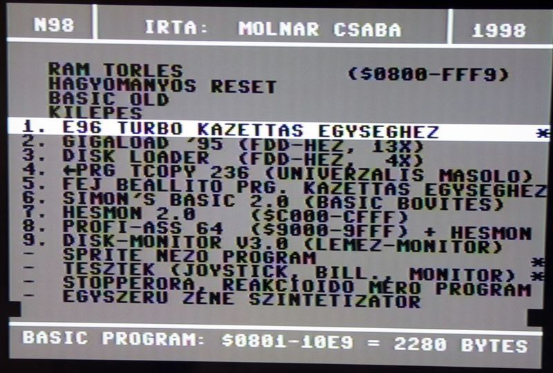
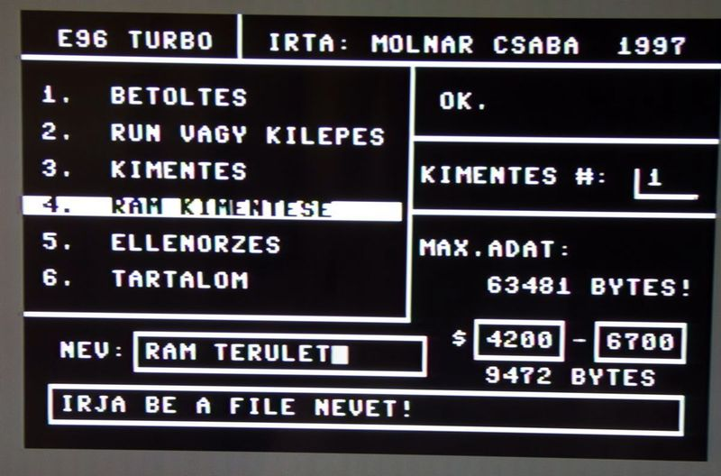
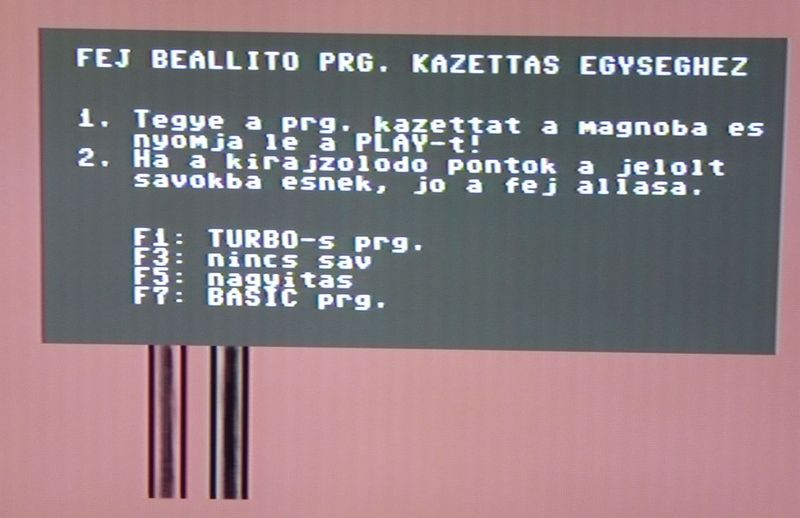
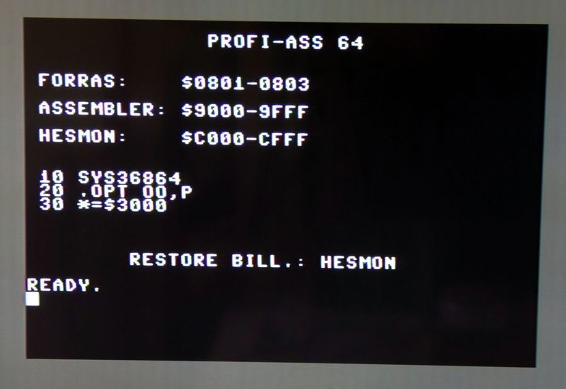
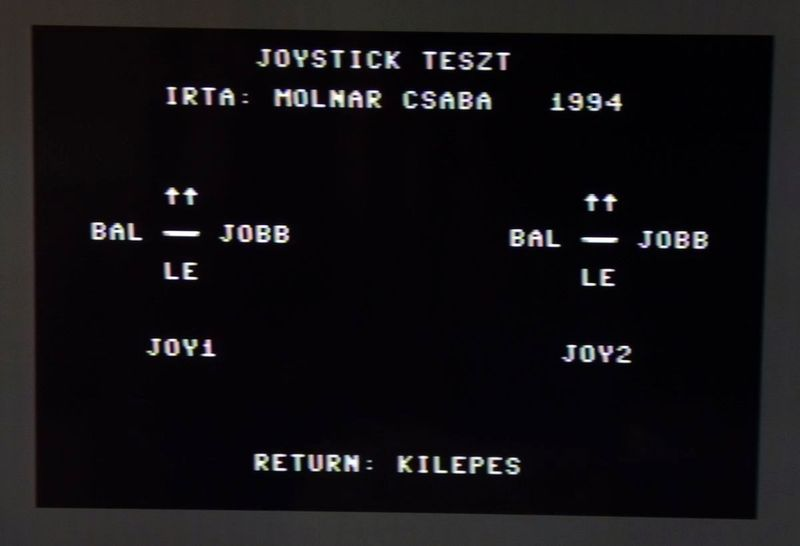
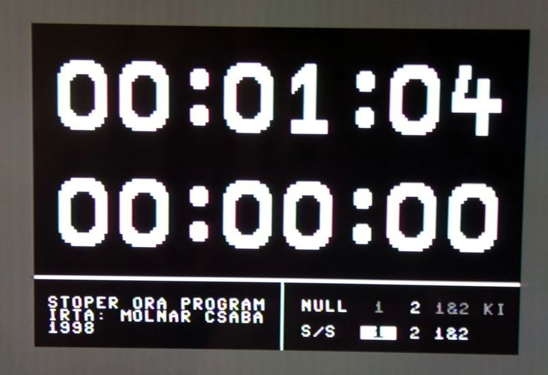
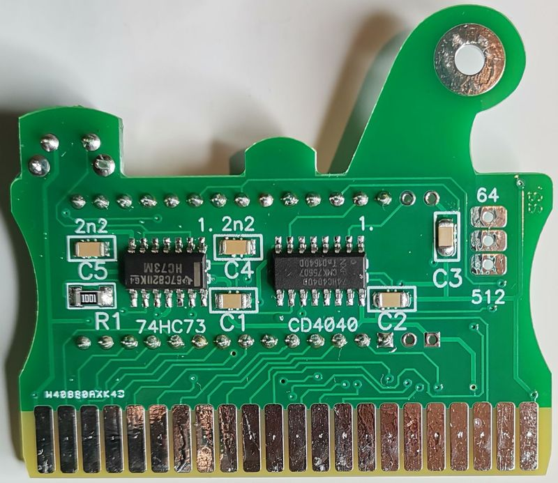
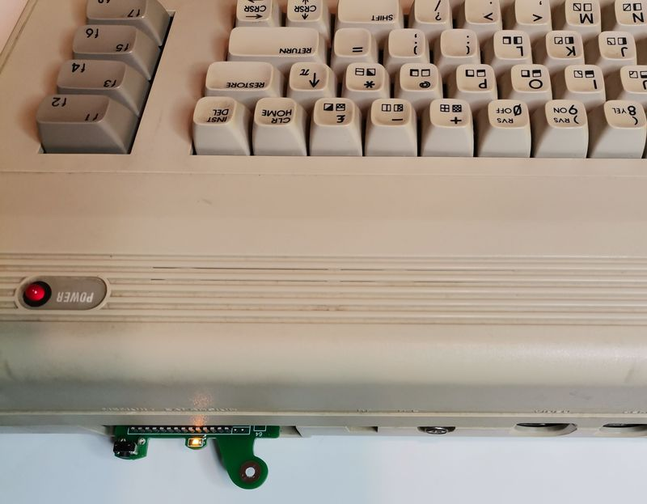
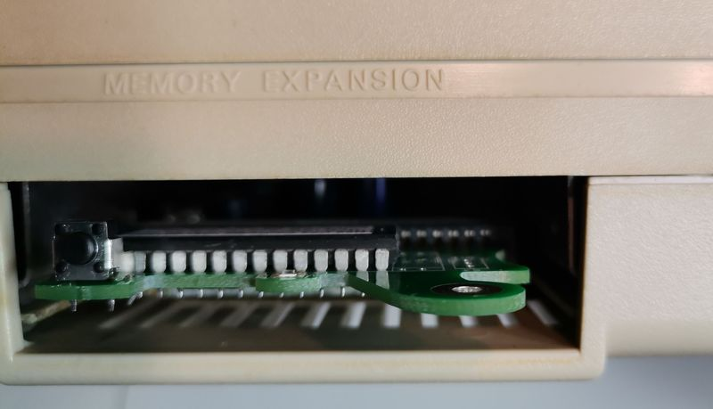

A főmenü.

Kazettás egységhez
készült gyorstöltő, amivel memória cím
szerint is lehet
mentést készíteni.

Fejmerőlegesség
beállító program kazettás egységhez,
tetszőleges programkazettához beállítható a
magnófej-merőlegesség.

Gépi kódú
programok írásához: kétmenetű assembler
és monitor program.

A teszt programok közül
az egyik: a joystick-ek működőképességét
ellenőrizheti vele.

Nagy számjegyű, két, függetelen stopper
órát tartalmazó program.

A kártya alsó
oldala.

A kártya
hátrafelé csak néhány cm-re lóg ki a
C64-ből,
sőt, akár állandóan a C64-ben maradhat, mert
jelenléte nem zavarja a gépen futó
játékok/programok működését.
Amennyiben mégis kivenné a gépből, a fület
megfogva alul-felül a mutató és a hüvelyk
ujjával, nagyon könnyen eltávolítható.

Így néz ki a
kártya, amikor üzemszerűen, ütközésig be
van tolva a memória-bővítő csatlakozóba.